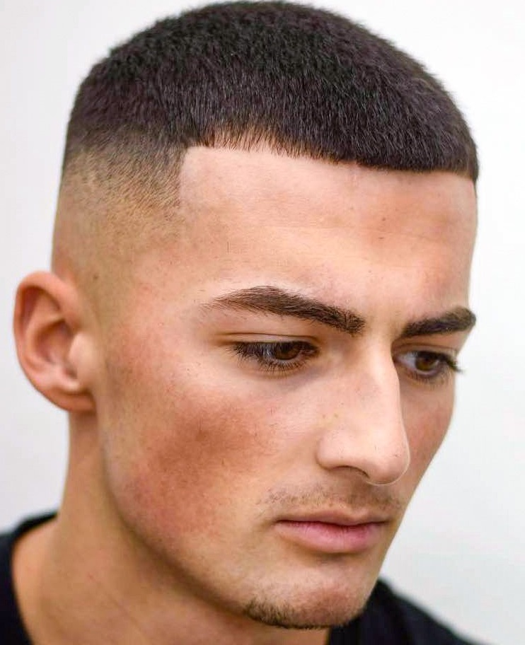

Strihy

French Crop
Kratší strih s textúrovanými vlasmi vpredu a vyčesanou ofinou.
Jednoduchý, no moderný vzhľad, ideálny pre nízku údržbu.

Low Taper Fade
Postupný prechod vlasov na bokoch a vzadu, začínajúci nízko.
Kombinácia čistého vzhľadu s eleganciou a moderným štýlom.

Buzz Cut
Krátky, univerzálny strih, ktorý si vyžaduje minimálnu starostlivosť a udržuje čistý vzhľad.